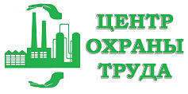

Аутсорсинг охраны труда
Внештатный специалист на Вашем предприятии
Наши преимущества:
Качество
Гарантированная ответственность за получение конечного результата
Сокращение управленческих издержек
Экономия на оплате труда штатного специалиста
Профессионализм
Все наши сотрудники сертифицированы и регулярно повышают квалификацию
Опыт
Средний стаж наших сотрудников более 10 лет
Аутсорсинг охраны труда
Аутсорсинг - это передача на основании гражданско-правового договора организацией-заказчиком функций (полностью или частично), которые необходимы для выполнения обязанностей работодателя по обеспечению безопасности труда персонала (ст. 212 ТК РФ), на обслуживание другой компании, специализирующейся на оказании услуг в сфере охраны труда.
В организациях со штатом работников 50 и менее человек создание подобной службы не является обязательным. Однако в компании все равно должен быть человек, осуществляющий функции по соблюдению условий охраны труда. Такие функции может выполнять аккредитованная организация или специалист, оказывающие услуги в области охраны труда.

Что входит в комплекс услуг по аутсорсингу охраны труда:
Получить бесплатную консультацию:
обучение

Наша компания, являясь региональным представителем Автономной некоммерческой организации «АКАДЕМИЯ ОБРАЗОВАТЕЛЬНЫХ ТЕХНОЛОГИЙ И ИССЛЕДОВАНИЙ», предлагает пройти в дистанционном формате обучение и повышение квалификации в области охраны труда и других сферах.
С нами Вы можете получить новую специальность или повысить свою квалификацию. Дистанционное обучение- это совокупность современных образовательных методик и программ в сочетании с высоким качеством знаний получаемых в комфортных условиях в удобное для Вас время.
Такое обучение отличный вариант для совершенствования профессиональных навыков или смены сферы деятельности, позволяющий существенно сэкономить время и финансы.
Сертификаты и лицензии


Управление профессиональными рисками
Одним из важнейших направлений в области охраны труда является формирование эффективной Системы управления охраной труда (СУОТ) на предприятиях и проведение оценки профессиональных рисков.
Основной задачей внедрения СУОТ на предприятии является переход от реагирования на страховые случаи «postfactum» к управлению рисками повреждения здоровья работников. Благодаря проведению профилактических мероприятий, можно управлять профессиональными рисками путем контроля за состоянием условий труда.

Основные этапы оценки профессиональных рисков:
определение целей и программ по достижению приемлемого уровня профессионального риска
идентификация опасностей
количественная и сравнительная оценка рисков
разработка мероприятий по снижению рисков
контроль за внедрением и исполнением мероприятий
подготовка к аварийным ситуациям и реагирования на них
документирования системы управления профессиональными рисками
контроль функционирования системы управления профессиональными рисками
анализ эффективности функционирования системы управления профессиональными рисками со стороны работодателя и его представителей
корректирующие действия по улучшению СУОТ и системы управления профессиональными рисками